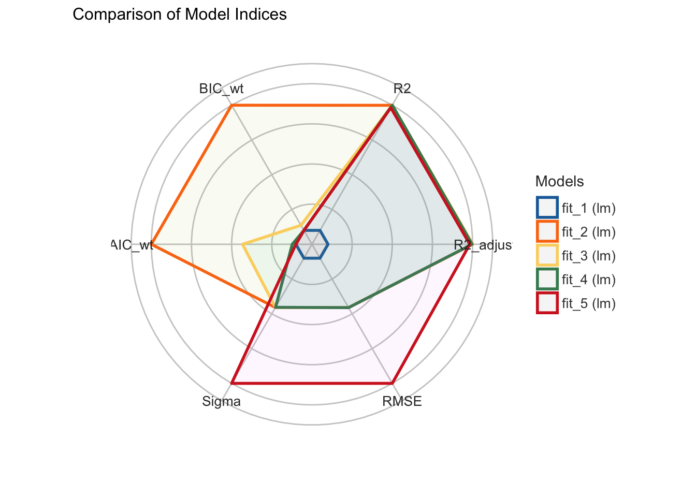

30 Multiple lineare Regression
Version vom September 05, 2022 um 12:05:28

Ein Wort zur Klausur
Wir nutzen folgende
30.1 Genutzte R Pakete für das Kapitel
Wir wollen folgende R Pakete in diesem Kapitel nutzen.
Am Ende des Kapitels findest du nochmal den gesamten R Code in einem Rutsch zum selber durchführen oder aber kopieren.
30.2 Daten
In der Tabelle 34.1 ist der Datensatz model_tbl nochmal dargestellt.
| animal | sex | weight | jump_length | flea_count | hatch_time | log_hatch_time |
|---|---|---|---|---|---|---|
| cat | male | 6.02 | 15.79 | 5 | 483.6 | 6.18 |
| cat | male | 5.99 | 18.33 | 1 | 82.56 | 4.41 |
| cat | male | 8.05 | 17.58 | 1 | 296.73 | 5.69 |
| cat | male | 6.71 | 14.09 | 3 | 140.9 | 4.95 |
| cat | male | 6.19 | 18.22 | 1 | 162.2 | 5.09 |
| cat | male | 8.18 | 13.49 | 1 | 167.47 | 5.12 |
| … | … | … | … | … | … | … |
| fox | female | 8.04 | 27.81 | 4 | 424.46 | 6.05 |
| fox | female | 9.03 | 24.02 | 1 | 349.48 | 5.86 |
| fox | female | 7.42 | 24.53 | 3 | 151.43 | 5.02 |
| fox | female | 9.26 | 24.35 | 1 | 182.68 | 5.21 |
| fox | female | 8.85 | 24.36 | 3 | 104.89 | 4.65 |
| fox | female | 7.89 | 22.13 | 2 | 62.99 | 4.14 |
30.3 Multiple lineare Regression
\[ y \sim x_1 + x_2 + ... + x_p \]
\[ y \sim \beta_0 + \beta_1 x_1 + \beta_2 x_2 + ... + \beta_p x_p + \epsilon \]
\[ \epsilon \sim \mathcal{N}(0, s^2_y) \]


30.4 Interpretation von kontinuierlichen \(x\)
lm(jump_length ~ weight, data = model_tbl) %>%
tidy() %>%
select(term, estimate)# A tibble: 2 × 2
term estimate
<chr> <dbl>
1 (Intercept) 9.79
2 weight 1.34ggplot(model_tbl, aes(x = weight, y = jump_length)) +
theme_bw() +
geom_point() 
30.5 Interpretation von kategoriellen \(x\) (2 Level)
lm(jump_length ~ sex, data = model_tbl) %>%
tidy() %>%
select(term, estimate)# A tibble: 2 × 2
term estimate
<chr> <dbl>
1 (Intercept) 18.1
2 sexfemale 4.90
30.6 Interpretation von kategoriellen \(x\) (\(2>\) Level)
lm(jump_length ~ animal, data = model_tbl) %>%
tidy() %>%
select(term, estimate)# A tibble: 3 × 2
term estimate
<chr> <dbl>
1 (Intercept) 17.9
2 animaldog 2.61
3 animalfox 5.19
30.7 Vergleich von Modellen
30.7.1 Welche Variable soll ins Modell?
fit_1 <- lm(jump_length ~ animal, data = model_tbl)
fit_2 <- lm(jump_length ~ animal + sex, data = model_tbl)
fit_3 <- lm(jump_length ~ animal + sex + weight, data = model_tbl)
fit_4 <- lm(jump_length ~ animal + sex + sex:weight + animal:weight, data = model_tbl)
fit_5 <- lm(log(jump_length) ~ animal + sex, data = model_tbl)comp_res <- compare_performance(fit_1, fit_2, fit_3, fit_4, fit_5, rank = TRUE)
comp_res# Comparison of Model Performance Indices
Name | Model | R2 | R2 (adj.) | RMSE | Sigma | AIC weights | BIC weights | Performance-Score
-------------------------------------------------------------------------------------------------
fit_2 | lm | 0.739 | 0.738 | 1.926 | 1.933 | 0.717 | 0.961 | 79.80%
fit_5 | lm | 0.731 | 0.729 | 0.099 | 0.099 | 2.88e-09 | 3.85e-09 | 66.01%
fit_3 | lm | 0.739 | 0.737 | 1.926 | 1.935 | 0.265 | 0.039 | 53.28%
fit_4 | lm | 0.739 | 0.736 | 1.925 | 1.938 | 0.018 | 3.66e-06 | 46.82%
fit_1 | lm | 0.316 | 0.314 | 3.118 | 3.126 | 6.04e-126 | 7.29e-125 | 0.00%plot(comp_res)
test_vuong(fit_1, fit_2, fit_3, fit_4, fit_5)Name | Model | Omega2 | p (Omega2) | LR | p (LR)
------------------------------------------------------
fit_1 | lm | | | |
fit_2 | lm | 0.41 | < .001 | -18.46 | < .001
fit_3 | lm | 0.41 | < .001 | -18.45 | < .001
fit_4 | lm | 0.41 | < .001 | -18.46 | < .001
fit_5 | lm | 0.47 | < .001 | -123.94 | < .001
Each model is compared to fit_1.30.7.2 War die Transformation sinnvoll?
comp_res <- compare_performance(fit_1, fit_2, rank = TRUE)Warning: When comparing models, please note that probably not all models were fit
from same data.comp_res# Comparison of Model Performance Indices
Name | Model | R2 | R2 (adj.) | RMSE | Sigma | AIC weights | BIC weights | Performance-Score
-----------------------------------------------------------------------------------------------------
fit_2 | lm | 0.006 | 0.001 | 0.992 | 0.995 | 1.00 | 1.00 | 66.67%
fit_1 | lm | 0.008 | 0.003 | 789.441 | 792.086 | 0.00e+00 | 0.00e+00 | 33.33%
30.8 Generalisierung von lm() zu glm() und [g]lmer()
- Die Funktion
lm()nutzen wir, wenn das Outcome \(y\) einer Normalverteilung folgt. - Die Funktion
glm()nutzen wir, wenn das Outcome \(y\) einer andere Verteilung folgt. - Die Funktion
lmer()nutzen wir, wenn das Outcome \(y\) einer Normalverteilung folgt und wir noch einen Block- oder Clusterfaktor vorliegen haben. - Die Funktion
glmer()nutzen wir, wenn das Outcome \(y\) einer andere Verteilung folgt und wir noch einen Block- oder Clusterfaktor vorliegen haben.